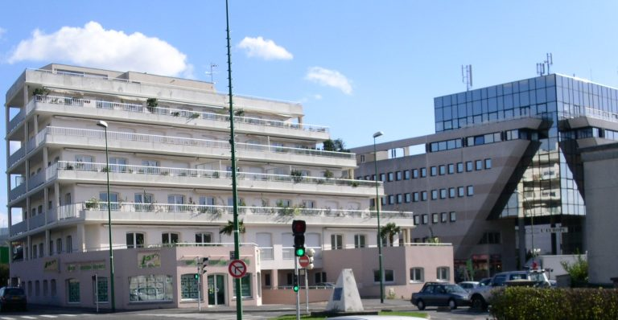
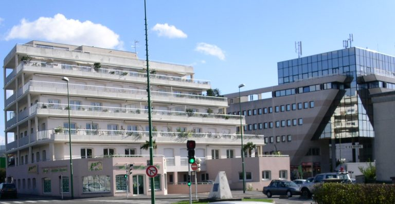

bureaux a rueil malmaison
location de bureaux à destination des entreprises
Découvrez nos bureaux à louer
location de bureaux à destination des entreprises
Découvrez nos bureaux à louerFoncière Pagerie Malmaison est une entreprise de location de bureaux professionnels située 16 avenue des Chateaupieds 92500 RUEIL-MALMAISON. Nos bureaux sont conçus pour répondre aux besoins des entreprises modernes et offrir un environnement de travail confortable et stimulant pour les professionnels. Avec un design épuré et une attention portée aux détails, nos locaux sont équipés pour répondre à vos exigences. Nous sommes convaincus que nos bureaux sont l’endroit idéal pour les entreprises ambitieuses et nous invitons tous les professionnels à venir visiter nos locaux pour découvrir l’expérience Foncière Pagerie Malmaison.

32 Bureaux loués
16 avenue des Chateaupieds
92500 RUEIL MALMAISON
Parking à proximité
 



Découvrez cette opportunité unique au sein d’un immeuble moderne polyvalent, qui combine à la fois des espaces de bureaux et des logements. Idéalement situé en face de la cité administrative, cet emplacement stratégique vous assure une visibilité optimale pour votre entreprise.
Les bureaux, situés aux 1er et 2ème étages et accessibles par un ascenseur, offrent un environnement de travail agréable avec une abondance de lumière naturelle et des installations pratiques. De plus, des terrasses sont disponibles pour vous permettre de vous détendre ou d’échanger en plein air.
Nous vous proposons des surfaces flexibles de 800 m² et 200 m², parfaitement adaptées aux besoins de divers projets professionnels. Pour obtenir plus d’informations ou organiser une visite, n’hésitez pas à nous contacter. C’est une opportunité à ne pas manquer !